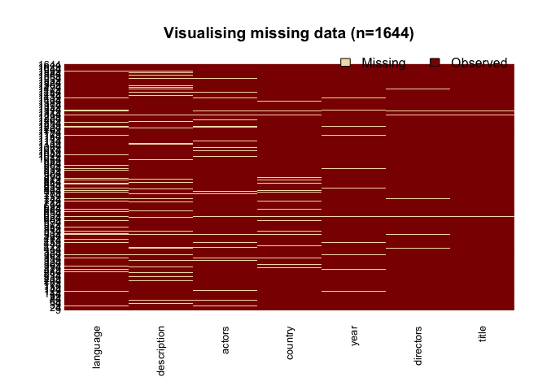
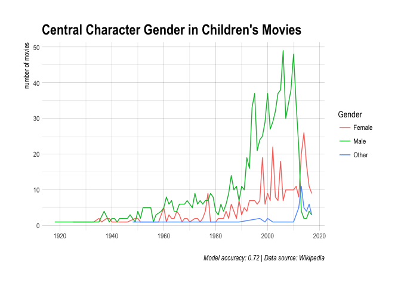
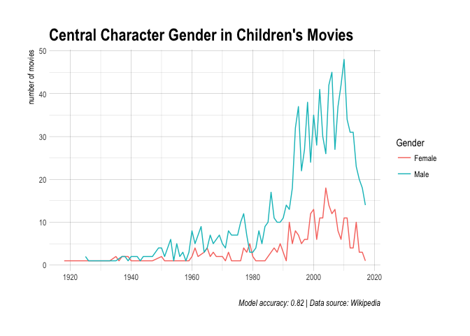

Copyright © 2020 Félix Luginbühl. All rights reserved.
Some time ago, I read a very interesting post from Giora Simchoni who used machine learning to estimate how many children’s books have a central female character. Based on a Goodread list, he showed that for every book with a central female character, there are between 1.1 and 1.3 books written with a male protagonist. I couldn’t help thinking that his analysis should be replicated on children’s movies.
So that’s what we will do in this blog post, using this Wikipedia article that listed 100 years of children’s movies. We will see that reusing someone else code cannot be done without adapting it to the specific features of our own dataset. It’s why, in addition to the multiclass classification made by Giora, we will perform a binary logistic classification. Finally, we will visualize the predictions of our models in order to know if the central character gender ratio is changing over the years1.
Since we will reuse most of Giora’s code, you really should read his post first. You read it? Good, let’s move one!
Let’s begin by scraping all the children’s movies links of our Wikipedia article using {rvest}.
library(tidyverse)
library(rvest)
# Permanent link for reproducibility
baseUrl <- "https://en.wikipedia.org/w/index.php?title=List_of_children%27s_films&oldid=810426354"
urls <- baseUrl %>%
read_html() %>%
html_nodes("a") %>%
html_attr("href") %>%
keep(startsWith(., "/wiki/")) %>%
discard(str_detect(., "Children%27s_film")) %>%
discard(startsWith(., "/wiki/Wikipedia:")) %>%
discard(startsWith(., "/wiki/User")) %>%
discard(startsWith(., "/wiki/Help:")) %>%
discard(startsWith(., "/wiki/Talk:")) %>%
discard(startsWith(., "/wiki/Special:")) %>%
discard(startsWith(., "/wiki/Portal:")) %>%
discard(startsWith(., "/wiki/Category:")) %>%
discard(startsWith(., "/wiki/List_of_")) %>%
.[-c(1698:1725)] # remove infobox links
as_tibble(urls)## # A tibble: 1,697 x 1
## value
## <chr>
## 1 /wiki/The_Blue_Bird_(1918_film)
## 2 /wiki/Pollyanna_(1920_film)
## 3 /wiki/Peter_Pan_(1924_film)
## 4 /wiki/A_Kiss_for_Cinderella_(film)
## 5 /wiki/Wizard_of_Oz_(1925_film)
## 6 /wiki/The_Adventures_of_Prince_Achmed
## 7 /wiki/Alice_in_Wonderland_(1933_film)
## 8 /wiki/Babes_in_Toyland_(1934_film)
## 9 /wiki/Curly_Top_(film)
## 10 /wiki/The_New_Gulliver
## # ... with 1,687 more rowsWe almost got 1700 wikilinks!
Now, we want to scrape specific data from each link. To do that, we will write a function that reads a link of the urls vector and returns a list of 7 components, i.e. title, years, actors, directors, country, language and description.
Click on ‘Show code’ to see this looong function.
Show code
moviesData <- function(urls) {
html <- tryCatch(read_html(str_c("https://en.wikipedia.org", urls)),
error = function(e) NULL)
infobox <- tryCatch(
html %>%
html_node(".infobox") %>%
html_children() %>%
html_text(),
error = function(e) NA
)
title <- tryCatch(
html %>%
html_nodes(".summary") %>%
html_text() %>%
first(), # avoid title duplication
error = function(e) NA
)
year <- tryCatch(
html %>%
html_nodes(".published") %>%
html_text() %>%
str_extract("[0-9]{4}") %>%
unique() %>%
first() %>% # avoid title duplication
as.numeric(),
error = function(e) NA
)
if(is.na(year)) {
infoboxRow <- infobox %>%
str_detect("Release") %>%
which()
year <- infobox[[infoboxRow[1]]] %>%
str_extract("[0-9]{4}") %>%
unique() %>%
first() %>%
as.numeric()
}
getActors <- function() {
infoboxRow <- infobox %>%
str_detect("Starring") %>%
which()
actorsNames <- infobox[[infoboxRow[1]]] %>%
gsub("^Starring", "", .) %>%
gsub("\n", "", .) %>%
gsub("([a-z])([A-Z])", "\\1 \\2", .)
}
actors <- tryCatch(
getActors(),
error = function(e) NA
)
if(identical(actors, "see below") |
identical(actors, "See below") |
identical(actors, "See voices")) {
actors <- NA
}
getDirectors <- function() {
infoboxRow <- infobox %>%
str_detect("Directed by") %>%
which()
directorNames <- infobox[[infoboxRow[1]]] %>%
gsub("Directed by", "", .) %>%
gsub("\n", "", .) %>%
gsub("([a-z])([A-Z])", "\\1 \\2", .) %>%
unlist()
}
directors <- tryCatch(
getDirectors(),
error = function(e) NA
)
getCountry <- function() {
infoboxRow <- infobox %>%
str_detect("Country") %>%
which()
countryNames <- infobox[[infoboxRow[1]]] %>%
gsub("Country", "", .) %>%
gsub("\n", "", .) %>%
gsub("([a-z])([A-Z])", "\\1 \\2", .)
}
country <- tryCatch(
getCountry(),
error = function(e) NA
)
getLanguage <- function() {
infoboxRow <- infobox %>%
str_detect("Language") %>%
which()
movieLangage <- infobox[[infoboxRow[1]]] %>%
gsub("Language", "", .) %>%
gsub("\n", "", .) %>%
gsub("([a-z])([A-Z])", "\\1 \\2", .) %>%
unlist()
}
language <- tryCatch(
getLanguage(),
error = function(e) NA
)
article <- tryCatch(
html %>%
html_nodes(".mw-body") %>%
html_text() %>%
str_split("\n") %>%
unlist() %>%
gsub("\t", "", .),
error = function(e) NA
)
article <- tryCatch(
article <- article[article != ""], # remove empty lines
error = function(e) NA
)
getDescription <- function() {
descriptionRow <<- article %>%
str_detect("^Plot") %>%
which() %>%
sum(+1) # row number after plot title
movieDescription <<- article[[descriptionRow[1]]] %>%
gsub("Language", "", .) %>%
gsub("\n", "", .) %>%
gsub("([a-z])([A-Z])", "\\1 \\2", .) %>%
unlist()
}
description <- tryCatch(
getDescription(),
error = function(e) NA
)
# Remove Wikipedia warning about the plot
if(startsWith(description, "This article") |
startsWith(description, "This section") |
startsWith(description, "This film's plot summary")) {
descriptionRow <- sum(descriptionRow + 1)
description <- article[[descriptionRow[1]]]
}
# if the description has less than 70 characters, skipping the row
if(nchar(description) < 70) {
descriptionRow <- sum(descriptionRow + 1) # skip to next row
description <- article[[descriptionRow[1]]]
}
# Skipping row another time, just to be sure
if(nchar(description) < 70) {
descriptionRow <- sum(descriptionRow + 1) # skip to next row
description <- article[[descriptionRow[1]]]
}
# if descriptionRow is before the 5th, it's not a plot
if(descriptionRow < 5) {
description <- NA
}
return(list(
title = title,
year = year,
actors = actors,
directors = directors,
country = country,
language = language,
description = description
))
}As you can see inside the function, we scraped the data from the Wikipedia body article and, when getting a missing value, we tried to get the data from its infobox (when existing). We used some “tricks” to avoid getting the warning messages or image description into the description variable.
Note that the function takes only the first paragraph of the article plot section. This is not really a problem as it often describes the main character as he/she appears first or gives a general summary of the movie.
Okay, let’s try our function on the first link.
## List of 7
## $ title : chr "The Blue Bird"
## $ year : num 1918
## $ actors : chr "Tula Belle Robin Macdougall"
## $ directors : chr "Maurice Tourneur"
## $ country : chr "United States"
## $ language : chr "Silent (English intertitles)"
## $ description: chr "When poor old widow Berlingot asks Tyltyl and Mytyl, the young son and daughter of her more prosperous neighbors, for the loan "| __truncated__In order to scrape the 1700 wikilinks and build a single dataset of 7 variables, we will use an elegant code written by Giora in another post of his blog.
movies <- tibble(
title = character(0),
year = integer(0),
actors = character(0),
directors = character(0),
country = character(0),
language = character(0),
description = character(0)
)
getMoviesData <- function(i) {
cat(i, " ")
movie <- tryCatch(
read_html(str_c("https://en.wikipedia.org", urls[i])) %>%
moviesData(),
error = function(e) NULL
)
movies <<- rbind.data.frame(movies, movie, stringsAsFactors = FALSE)
}
walk(1:length(urls), getMoviesData)## 1 2 3 4 5 6 7 8 9 10 11 12 13 14 15 16 # etc.## Observations: 1,644
## Variables: 7
## $ title <chr> "The Blue Bird", "Pollyanna", "Peter Pan", "A Kiss...
## $ year <dbl> 1918, 1920, 1924, 1925, 1925, 1926, 1933, 1934, 19...
## $ actors <chr> "Tula Belle Robin Macdougall", "Mary Pickford", "B...
## $ directors <chr> "Maurice Tourneur", "Paul Powell", "Herbert Brenon...
## $ country <chr> "United States", "United States", "United States",...
## $ language <chr> "Silent (English intertitles)", "Silent film Engli...
## $ description <chr> "When poor old widow Berlingot asks Tyltyl and Myt...Nice! But how good our function performed?
Let’s have a look on the pourcentage of missing values by variable.
## title year actors directors country language
## 0.67 2.92 8.52 2.25 5.05 12.77
## description
## 10.16And what about the NAs repartition into the dataset?

We will remove some missing values from our dataset. One hard choice is to take away all the NAs of the description variable, as we will lose 10% of our movies. However, we can think that a movie without a description of the plot probably isn’t that important or influental. And, above all, the accuracy of our predictive model will be greatly improved.
# Removing some duplicated movies
movies <- movies[!duplicated(movies[,c("title", "year")]),]
# Removing NAs titles
movies <- movies[!is.na(movies$title),]
# Removing NAs description
movies <- movies[!is.na(movies$description),]
dim(movies)## [1] 1452 7We now have a dataset of 1452 children’s movies.
On last thing before moving on. The Wikipedia article warns us that it “deals primarily with the United States and do not represent a worldwide view of the subject”. Let’s check that.
## [1] 1115Yes, 77 % of the children’s movies are US-related.
Following Giora’s post, we have to manually tag a sample of our children’s movies dataset according to the gender of the central character, where 0 is “Female”, 1 is “Male”, and 2 is “Other” (meaning it is hard to decide which gender is central). I did it for the first 140 movies, which represents 10% of the movies dataset2.
classFirst140 <- c(
0, 1, 1, 0, 1, 1, 0, 0, 0, 1, 0, 1, 0, 0, 0, 1, 1, 0, 1, 0,
0, 0, 1, 1, 1, 1, 1, 1, 2, 2, 0, 1, 1, 1, 0, 1, 1, 2, 1, 1,
1, 1, 2, 1, 0, 1, 0, 0, 1, 1, 1, 1, 0, 1, 1, 1, 1, 1, 1, 1,
2, 1, 1, 1, 0, 1, 1, 1, 1, 2, 0, 1, 1, 2, 1, 1, 1, 1, 0, 1,
1, 1, 1, 1, 0, 1, 1, 1, 1, 1, 1, 1, 0, 2, 1, 1, 1, 0, 1, 1,
1, 2, 1, 0, 0, 0, 1, 0, 0, 1, 2, 1, 2, 1, 1, 1, 1, 1, 1, 2,
0, 1, 2, 0, 1, 0, 1, 0, 0, 2, 2, 1, 2, 1, 1, 1, 1, 1, 1, 1
)
movies$class <- c(classFirst140, rep(NA, nrow(movies) - 140))
write.csv(movies, "movies.csv", row.names = FALSE)
paste("Year of the last movie coded:", movies$year[140])## [1] "Year of the last movie coded: 1966"Just as Giora, coding the first movies is problematic. Since it’s not a random sample, its representativity of the other movies is questionable. Is it even more the case in our study, as all the movies are old. The game here is code reproducibility. We will try to “compensate” that afterwards.
What is the gender distribution of the first 140 movies according to my judgement?
## # A tibble: 4 x 4
## class n total p
## <dbl> <int> <int> <dbl>
## 1 0 35 1452 0.02410468
## 2 1 89 1452 0.06129477
## 3 2 16 1452 0.01101928
## 4 NA 1312 1452 0.90358127As the “Other” class belongs both to the “Male” and “Female” classes, the ratio is (89 + 16)/(35 + 16) = 2.06. In other words, for every children’s movie with a female central character, two are centered around a male character.
Since we want to make gender prediction, knowing if the first name of a character is “male” or “female” is informative. Giora scraped 1000 male and 1000 female names from the Babble website.
boys <- "https://www.babble.com/pregnancy/1000-most-popular-boy-names/"
boysNames <- read_html(boys) %>%
html_nodes("li") %>%
html_text() %>%
.[22:1021]
girls <- "https://www.babble.com/pregnancy/1000-most-popular-girl-names/"
girlsNames <- read_html(girls) %>%
html_nodes("li") %>%
html_text() %>%
.[22:1021]
boysGirlsNames <- data.frame(cbind(boysNames, girlsNames))Giora used boy and girl names in order to know if the author and the title contains a “Male” or “Female” name. For our case study, it can be done for the directors and actors names. Potential predicators for the “Other” class are features like a title containing the word “the” or a high level of plural words.
library(magrittr)
getNBoysGirlsNames <- function(s, boys, firstToken) {
namesPattern <- if (boys) {
str_c(boysGirlsNames$boysNames, collapse = "\\b|\\b")
} else {
str_c(boysGirlsNames$girlsNames, collapse = "\\b|\\b")
}
s2 <- if (firstToken) {
str_split(s, " ")[[1]][1]
} else {
s
}
str_count(s2, namesPattern)
}
getNPluralWords <- function(s) {
sum(str_detect(str_split(s, " ")[[1]], "[A-Za-z]+s$"))
}
isStringStartsWithThe <- function(s) {
as.numeric(startsWith(s, "The"))
}
movies <- movies %>%
mutate(i_nBoysInBookDesc = map_dbl(description, getNBoysGirlsNames, TRUE, FALSE),
i_nGirlsInBookDesc = map_dbl(description, getNBoysGirlsNames, FALSE, FALSE),
i_nBoysInBookTitle = map_dbl(title, getNBoysGirlsNames, TRUE, FALSE),
i_nGirlsInBookTitle = map_dbl(title, getNBoysGirlsNames, FALSE, FALSE),
i_gapBoysGirlsBookDesc = i_nBoysInBookDesc - i_nGirlsInBookDesc,
i_gapBoysGirlsTitle = i_nBoysInBookTitle - i_nGirlsInBookTitle,
i_lengthTitle = map_dbl(title, nchar),
i_lengthBookDesc = map_dbl(description, nchar),
i_nPluralWordsInBookTitle = map_dbl(title, getNPluralWords),
i_titleStartsWithThe = map_dbl(title, isStringStartsWithThe))For our case study, other predictors can be built. Since the central character is often listed first in the Wikipedia articles, let’s see if the first name is a boy or a girl name. We can also sum up the gender-related pronoms of the movie description in variables.
movies$actorFirstName <- movies$actors %>%
sub(" .*", "",.)
movies$directorFirstName <- movies$directors %>%
sub(" .*", "",.)
getNHeHim <- function(s) {
nHe <- sum(str_detect(str_split(s, " ")[[1]], "\\bhe\\b"))
nHim <- sum(str_detect(str_split(s, " ")[[1]], "\\bhim\\b"))
nHeHim <- nHe + nHim
}
getNSheHer <- function(s) {
nShe <- sum(str_detect(str_split(s, " ")[[1]], "\\bshe\\b"))
nHer <- sum(str_detect(str_split(s, " ")[[1]], "\\bher\\b"))
nSheHer <- nShe + nHer
}
getNTheyTheir <- function(s) {
nThey <- sum(str_detect(str_split(s, " ")[[1]], "\\bthey\\b"))
nTheir <- sum(str_detect(str_split(s, " ")[[1]], "\\btheir\\b"))
nTheyTheir <- nThey + nTheir
}
movies <- movies %>%
mutate(i_BoyActorFirstName = map_dbl(actors, getNBoysGirlsNames, TRUE, TRUE),
i_GirlActorFirstName = map_dbl(actors, getNBoysGirlsNames, FALSE, TRUE),
i_BoyDirectorFirstName = map_dbl(directors, getNBoysGirlsNames, TRUE, TRUE),
i_GirlDirectorFirstName = map_dbl(directors, getNBoysGirlsNames, FALSE, TRUE),
i_NHeHis = map_dbl(description, getNHeHim),
i_NSheHer = map_dbl(description, getNSheHer),
i_NTheyTheir = map_dbl(description, getNTheyTheir))
movies %<>% filter(nchar(description) > 100)Like Giora, we can create a type variable in preparation of the machine learning stage, by splitting the dataset in three categories (i.e. “train”, “test”, and “other”).
nTagged <- sum(table(movies$class))
trainFrac <- 0.8 # Giora used 0.9
set.seed(2) # added for reproducibility
trainSample <- sample(nTagged, floor(nTagged * trainFrac))
movies %<>%
mutate(id = row_number(),
type = ifelse(row_number() %in% trainSample, "train",
ifelse(row_number() %in% 1:nTagged, "test", "other")))Lastly, it is time to work on the description variable.
library(tidytext)
dataForModeling <- movies %>%
unnest_tokens(word, description, drop = FALSE) %>%
count(id, word, sort = TRUE) %>%
#don't anti_join stop_words because 'her' and 'him' are there!
cast_dtm(id, word, n, weighting = tm::weightTf) %>%
tm::removeSparseTerms(0.997) %>% # from 0.999
as.matrix() %>%
as.data.frame() %>%
rownames_to_column("id") %>%
mutate(id = as.numeric(id)) %>%
rename(class1 = class, type1 = type) %>%
inner_join(movies %>%
select(id, starts_with("i_"), class, type), "id")
nonWordColIdx <- c(1, which(str_detect(colnames(dataForModeling), "i_")),
ncol(dataForModeling) - 1,
ncol(dataForModeling))
bkDescWords <- colnames(dataForModeling)[-nonWordColIdx]
colnames(dataForModeling)[-nonWordColIdx] <- str_c("word", 1:length(bkDescWords))
dim(dataForModeling)## [1] 1437 3417As you saw, the description variable has been tokenized and transformed in a sparse document-term Matrix that keeps only the tokens appearing in at least 4 different movie descriptions3.
Using the type column made earlier, let’s split the data into training and testing datasets.
train <- dataForModeling %>%
filter(type == "train") %>%
select(-type)
test <- dataForModeling %>%
filter(type == "test") %>%
select(-type)Following Giora, we will use Gradient-Boosted-Trees to perform a multiclass logistic classification with {xgboost}. Then, we will see which features of the model are the most important.
library(xgboost)
train_matrix <- xgb.DMatrix(data = as.matrix(train[,-c(1, ncol(train))]), label = train$class)
test_matrix <- xgb.DMatrix(data = as.matrix(test[, -c(1, ncol(test))]), label = test$class)
nClasses <- 3
xgb_params <- list("objective" = "multi:softprob",
"eval_metric" = "mlogloss",
"num_class" = nClasses)
nround <- 50
xgboostModel <- xgb.train(params = xgb_params, data = train_matrix, nrounds = nround)
names <- colnames(train[,-c(1, ncol(train))])
importance_matrix <- xgb.importance(feature_names = names, model = xgboostModel)
head(importance_matrix, 10) %>%
left_join(tibble(Feature = colnames(dataForModeling)[-nonWordColIdx], word = bkDescWords), "Feature") %>%
select(word, Feature, Gain)## word Feature Gain
## 1 <NA> i_NSheHer 0.19262235
## 2 her word4 0.12580363
## 3 his word6 0.05849402
## 4 mc word259 0.03820735
## 5 <NA> i_NHeHis 0.03196201
## 6 in word25 0.02862314
## 7 <NA> i_lengthTitle 0.02562286
## 8 has word149 0.02338283
## 9 queen word172 0.02255995
## 10 mills word2510 0.02245347Just as Giora’s case study, “her” and “his” are the most important splits used to build the XGBoost trees. It is now time to make a confusion matrix in order to estimate the performance of our model.
test_pred <- predict(xgboostModel, newdata = test_matrix)
labelNumToChar <- function(n) {
ifelse(n == 1, "Female",
ifelse(n == 2, "Male", "Other"))
}
test_prediction <- matrix(test_pred, nrow = nClasses,
ncol=length(test_pred)/nClasses) %>%
t() %>%
data.frame() %>%
mutate(labelN = test$class + 1,
predN = max.col(., "last"),
maxProb = pmap_dbl(list(X1, X2, X3), max),
predN_strict = ifelse(maxProb > 0.75, predN, 3),
label = map_chr(labelN, labelNumToChar),
pred = map_chr(predN, labelNumToChar))
caret::confusionMatrix(test_prediction$pred,
test_prediction$label)## Confusion Matrix and Statistics
##
## Reference
## Prediction Female Male Other
## Female 4 1 1
## Male 0 16 5
## Other 1 0 0
##
## Overall Statistics
##
## Accuracy : 0.7143
## 95% CI : (0.5133, 0.8678)
## No Information Rate : 0.6071
## P-Value [Acc > NIR] : 0.1670
##
## Kappa : 0.4271
## Mcnemar's Test P-Value : 0.1116
##
## Statistics by Class:
##
## Class: Female Class: Male Class: Other
## Sensitivity 0.8000 0.9412 0.00000
## Specificity 0.9130 0.5455 0.95455
## Pos Pred Value 0.6667 0.7619 0.00000
## Neg Pred Value 0.9545 0.8571 0.77778
## Prevalence 0.1786 0.6071 0.21429
## Detection Rate 0.1429 0.5714 0.00000
## Detection Prevalence 0.2143 0.7500 0.03571
## Balanced Accuracy 0.8565 0.7433 0.47727The classification model has a accuracy of 71%. Althought our model is quite good at classifying the “Female” and “Male” classes, it fails to predict the “Other” class. How can it be explained?
One can think that the first 140 movies we manually coded where strongly “genderized”, i.e. the movies up until 1960 were centered mainly on a single character. Indeed, we only tagged 16 movies as “Other”. The sample could be too small for the machine to “learn” how to recognize it.
Another explanation could be that when a man and a woman are both the main characters of a movie, the man often takes more space in the movie and therefore its description. Indeed, an recent study showed that men speak generally more than women in the movies, especially in the old ones.
We learned from the confusion matrix that most of the “Other” tend to be “Male”. A quick look at the description of the movies tagged as “Other” confirms that men are more present in the text. So let’s simply recode all the 2 as 1 and rerun all the script that led us to this stage of the analysis in order to try a binary logistic classification.
Show code
movies_2 <- movies
# Recoding all 2 to 1
movies_2$class[movies_2$class == 2] <- 1
# then running the exact same code with the new "movies_2" dataset
set.seed(22) # changing random sample (previously set.seed(2))
movies_2$actorFirstName <- movies_2$actors %>%
sub(" .*", "",.)
movies_2$directorFirstName <- movies_2$directors %>%
sub(" .*", "",.)
movies_2 <- movies_2 %>%
mutate(i_nBoysInBookDesc = map_dbl(description, getNBoysGirlsNames, TRUE, FALSE),
i_nGirlsInBookDesc = map_dbl(description, getNBoysGirlsNames, FALSE, FALSE),
i_nBoysInBookTitle = map_dbl(title, getNBoysGirlsNames, TRUE, FALSE),
i_nGirlsInBookTitle = map_dbl(title, getNBoysGirlsNames, FALSE, FALSE),
i_gapBoysGirlsBookDesc = i_nBoysInBookDesc - i_nGirlsInBookDesc,
i_gapBoysGirlsTitle = i_nBoysInBookTitle - i_nGirlsInBookTitle,
i_lengthTitle = map_dbl(title, nchar),
i_lengthBookDesc = map_dbl(description, nchar),
i_nPluralWordsInBookTitle = map_dbl(title, getNPluralWords),
i_titleStartsWithThe = map_dbl(title, isStringStartsWithThe))
movies_2 %<>% filter(nchar(description) > 100)
nTagged <- sum(table(movies_2$class))
trainFrac <- 0.8 # Giora used 0.9
set.seed(2) # added for reproducibility
trainSample <- sample(nTagged, floor(nTagged * trainFrac))
movies_2 %<>%
mutate(id = row_number(),
type = ifelse(row_number() %in% trainSample, "train",
ifelse(row_number() %in% 1:nTagged, "test", "other")))
library(tidytext)
dataForModeling_2 <- movies_2 %>%
unnest_tokens(word, description, drop = FALSE) %>%
count(id, word, sort = TRUE) %>%
#don't anti_join stop_words because 'her' and 'him' are there!
cast_dtm(id, word, n, weighting = tm::weightTf) %>%
tm::removeSparseTerms(0.997) %>% # from 0.999
as.matrix() %>%
as.data.frame() %>%
rownames_to_column("id") %>%
mutate(id = as.numeric(id)) %>%
rename(class1 = class, type1 = type) %>%
inner_join(movies_2 %>%
select(id, starts_with("i_"), class, type), "id")
nonWordColIdx_2 <- c(1, which(str_detect(colnames(dataForModeling_2), "i_")),
ncol(dataForModeling_2) - 1,
ncol(dataForModeling_2))
bkDescWords <- colnames(dataForModeling_2)[-nonWordColIdx_2]
colnames(dataForModeling_2)[-nonWordColIdx_2] <- str_c("word", 1:length(bkDescWords))
dim(dataForModeling_2)
train_2 <- dataForModeling_2 %>%
filter(type == "train") %>%
select(-type)
test_2 <- dataForModeling_2 %>%
filter(type == "test") %>%
select(-type)
library(xgboost)
train_matrix_2 <- xgb.DMatrix(data = as.matrix(train_2[,-c(1, ncol(train_2))]), label = train_2$class)
test_matrix_2 <- xgb.DMatrix(data = as.matrix(test_2[, -c(1, ncol(test_2))]), label = test_2$class)
xgb_params_2 <- list("objective" = "binary:logistic") # binary classification
nround <- 50
xgboostModel_2 <- xgb.train(params = xgb_params_2, data = train_matrix_2, nrounds = nround)
test_pred_2 <- predict(xgboostModel_2, newdata = test_matrix_2)
names_2 <- colnames(train_2[,-c(1, ncol(train_2))])
importance_matrix_2 <- xgb.importance(feature_names = names_2, model = xgboostModel_2)
head(importance_matrix_2, 10) %>%
left_join(tibble(Feature = colnames(dataForModeling_2)[-nonWordColIdx], word = bkDescWords), "Feature") %>%
select(word, Feature, Gain)## word Feature Gain
## 1 <NA> i_NSheHer 0.43346371
## 2 <NA> i_GirlActorFirstName 0.13024149
## 3 his word6 0.08187319
## 4 <NA> i_lengthTitle 0.03491770
## 5 temple word1018 0.03331005
## 6 war word798 0.02801142
## 7 many word1329 0.02762914
## 8 with word57 0.02702849
## 9 at word187 0.02599865
## 10 old word144 0.02562534# Making a confusion matrix is much easier with a binary classification
pred_class_2 <- ifelse(test_pred_2 > 0.75, 1, 0) # 0.75 as compensation of "Male" overrating
labelNumToChar_2 <- function(n) {
ifelse(n == 0, "Female", "Male")
}
test_prediction_2 <- matrix(test_2$class, nrow = 1,
ncol = length(test_2$class)) %>%
t() %>%
data.frame() %>%
mutate(predN = test_pred_2,
label = map_chr(test_2$class, labelNumToChar_2),
label = factor(label),
pred = map_chr(pred_class_2, labelNumToChar_2),
pred = factor(pred))
caret::confusionMatrix(test_prediction_2$pred,
test_prediction_2$label)## Confusion Matrix and Statistics
##
## Reference
## Prediction Female Male
## Female 7 2
## Male 3 16
##
## Accuracy : 0.8214
## 95% CI : (0.6311, 0.9394)
## No Information Rate : 0.6429
## P-Value [Acc > NIR] : 0.03326
##
## Kappa : 0.6023
## Mcnemar's Test P-Value : 1.00000
##
## Sensitivity : 0.7000
## Specificity : 0.8889
## Pos Pred Value : 0.7778
## Neg Pred Value : 0.8421
## Prevalence : 0.3571
## Detection Rate : 0.2500
## Detection Prevalence : 0.3214
## Balanced Accuracy : 0.7944
##
## 'Positive' Class : Female
## Our predictive model performed much better, with an accuracy of 82%. But it tends to classify the movies more as “Male” than as “Female”. This is a direct result of our recoding decision. We need to keep that in mind for later on. We also notice that the most important features used to build the decision trees are quite similar to the ones of the previous model.
It’s finally time to visualize the distribution of the gender ratio over the years. We will use almost the same script for the two models and compare their predictions.
train_matrix <- xgb.DMatrix(data = as.matrix(rbind(train, test)[,-c(1, ncol(train))]),
label = c(train$class, test$class))
xgboostModelAll <- xgb.train(params = xgb_params,
data = train_matrix,
nrounds = nround)
unknown <- dataForModeling %>%
filter(type == "other") %>%
select(-type)
unknown_matrix <- xgb.DMatrix(data = as.matrix(unknown[, -c(1, ncol(unknown))]))
unknown_pred <- predict(xgboostModelAll, newdata = unknown_matrix)
unknown_prediction <- matrix(unknown_pred, nrow = nClasses,
ncol=length(unknown_pred)/nClasses) %>%
t() %>%
data.frame() %>%
mutate(predN = max.col(., "last"),
maxProb = pmap_dbl(list(X1, X2, X3), max),
predN_strict = ifelse(maxProb > 0.75, predN, 3),
pred = map_chr(predN, labelNumToChar))
First139Labels <- movies %>%
filter(type != "other") %>%
select(class) %>%
transmute(label = map_chr(class, labelNumToChar)) %>%
unlist()
movieClasses <- c(unknown_prediction$pred, First139Labels)
table(movieClasses) # overall gender ratio## movieClasses
## Female Male Other
## 401 981 55movies %<>% mutate(class = movieClasses)
library(hrbrthemes)
movies %>%
group_by(year, class) %>%
count(class) %>%
ggplot(aes(x = year, y = n, color = class)) +
geom_line() +
scale_color_discrete(name = "Gender") +
labs(x = "", y = "number of movies",
title = "Gender centrality in children's movies",
caption = "Model accuracy: 0.72 | Data source: Wikipedia") +
theme_ipsum() 
Why is the number of “Female” and “Other” suddenly higher than “Male” since 2013? Are the children’s movies more feminists then they were a few years ago? Let’s see if this pattern also appears in our binary classification model.
train_matrix_2 <- xgb.DMatrix(data = as.matrix(rbind(train_2, test_2)[,-c(1, ncol(train_2))]),
label = c(train_2$class, test_2$class))
xgboostModelAll_2 <- xgb.train(params = xgb_params_2,
data = train_matrix_2,
nrounds = nround)
unknown_2 <- dataForModeling_2 %>%
select(-type)
unknown_matrix_2 <- xgb.DMatrix(data = as.matrix(unknown_2[, -c(1, ncol(unknown_2))]))
unknown_pred_2 <- predict(xgboostModelAll_2, newdata = unknown_matrix_2)
movies_2 %<>%
mutate(class = ifelse(unknown_pred_2 > 0.75, 1, 0),
class_2 = map_chr(class, labelNumToChar_2))
movies_2 %>%
group_by(year, class_2) %>%
count(class_2) %>%
ggplot(aes(x = year, y = n, color = class_2)) +
geom_line() +
scale_color_discrete(name = "Gender") +
labs(x = "", y = "number of movies",
title = "Central Character Gender in Children's Movies",
caption = "Model accuracy: 0.82 | Data source: Wikipedia") +
theme_ipsum()
Apparently no. However, as said before, our second model overclassifies the “Male” category. The reality is probably in between the two models: there are more central female characters but still far away from gender equality4.
Predicting the gender of central characters in children’s movie isn’t an easy task, especially when using almost 100-years old movies. The predictions could have been different if I had chosen to code the last 140 movies of our dataset.
Anyway, this was without doubt the longer post I’ve published on my blog… and the first using machine learning! I’ve learned a lot and had so much fun.
Thank you Giora!
Giora could have implemented that very easily, but chose not to because he wanted to respond to a specific question, as explained in his concluding remarks.↩︎
In his post, Giora coded 200 movies (equivalent to 5.4% of this dataset).↩︎
Giora explains in more detail what his code does in his post.↩︎
To know for sure if the trend is reversing, we could simply code manually the class variable since 2013. If anyone has the motivation to do this task, I would be pleased to know your finding.↩︎

Copyright © 2020 Félix Luginbühl. All rights reserved.